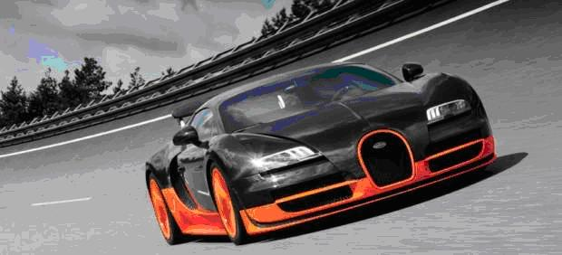
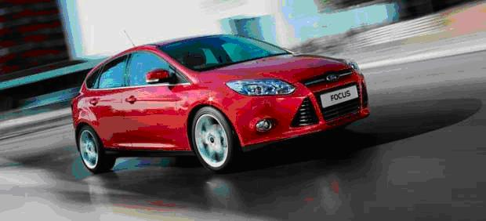
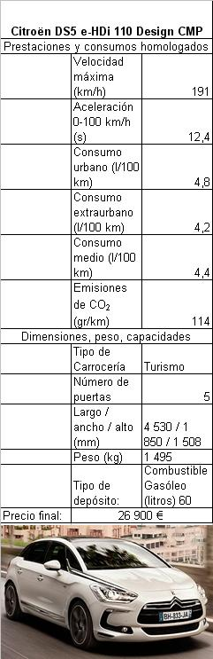
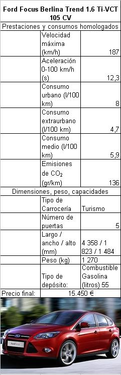
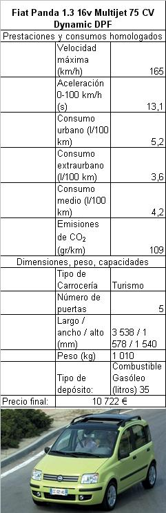
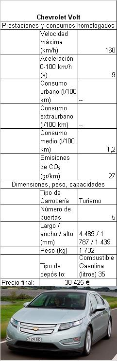
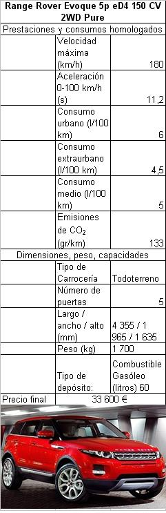
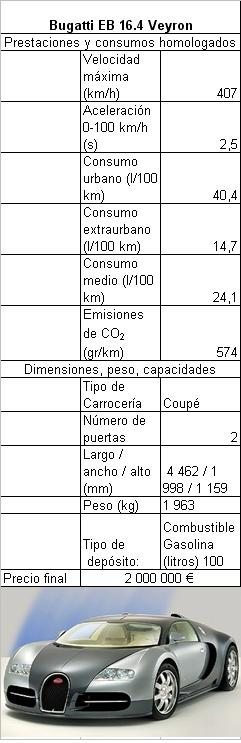
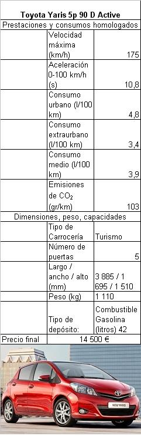
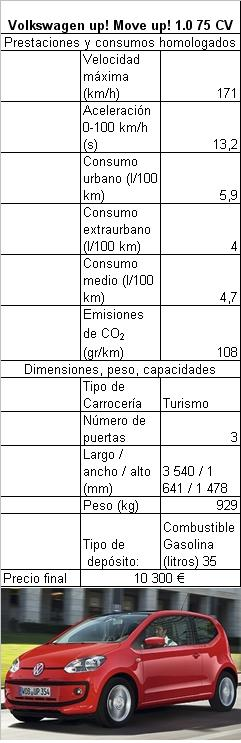

Activitat global
|
ACTIVITAT (PER
PARELLES):
(Font: elaboració pròpia, en col·laboració amb Pilar
Oliver)
Llegeix les següents notícies: Un Bugatti de dos millones de euros, el coche más caro del año
Es el automóvil más caro del año según se recoge en la lista de los
'Diez coches más caros de 2012' de la revista estadounidense Forbes. (BUGATTI)
Los siete finalistas al
galardón Coche del Año en Europa 2012

La firma germana ha desplegado amplios recursos tecnológicos en su renovado Focus. (Ford)
Una
lista inicial de 35 vehículos cumplían los requisitos
para optar al prestigioso galardón del sector automovilístico Coche
del Año de Europa 2012, sin embargo, solo siete coches son ya
los finalistas tras una primera criba de los jurados
internacionales.
Los aspirantes al galardón son finalmente el Citroën DS5,
el Fiat Panda, el Ford Focus, el
Chevrolet Volt, el Range Rover Evoque, el Toyota
Yaris y el Volkswagen Up!.
Entre
estos siete candidatos se esconde el ganador del premio, que se concede desde
1964, cuyo nombre se hará público el próximo lunes 5 de marzo, con motivo de la
celebración del Salón Internacional del Motor de Ginebra 2012,
y que sustituirá al Nissan Leaf,
vencedor en la edición 2011.
En
esta ocasión dos factores parece que se han tenido muy en cuenta para la
selección: el precio, se imponen los modelos
asequibles, y el impacto medioambiental de los vehículos, coches ecológicos y
de menor consumo.
Según
la web oficial de la organización a Car of the Year, estas son las
características particulares de cada uno de los vehículos para haberse colado
entre los candidatos finales al premio de la vanguardia de las
cuatro ruedas. Citroën
DS5
Es el tercer modelo de la línea de
lujo DS de Citroën. Combina un diseño
futurista con un habitáculo colmado de detalles. Con un cierto aire
deportivo que
evoca el espíritu de la distinción y la originalidad de la famosa ID / DS de
los coches de los años 50, destaca el cuidado y los detalles que salpican el
lujoso interior. Ofrece dos versiones diésel de 110 y 160 CV, y dos
gasolina de
155 y 200 CV.
Fiat
Panda
Ganador del premio
Coty en 2004, el interior de este pequeño Fiat y su maletero son más generosos en
espacio, y su diseño exterior ha mejorado gracias a un aspecto fresco y
práctico que lo convierten en un coche versátil.
Además, una serie de detalles opcionales procedentes de una renovada
tecnología están disponibles, entre ellos el sistema para
evitar colisiones a bajas velocidades o el freno automático para situaciones de
emergencia. Está disponible con tres tipos de equipamiento: tres
motorizaciones gasolina y una diésel.
Ford
Focus
El Ford
Focus es la gran apuesta de la firma para globalizarse. Entre los motores,
destacan por su rendimiento los gasolina
con turbo y su aerodinámica es excelente, en parte gracias a un
dispositivo inteligente que varía el flujo de aire en la parrilla delantera.
Además, por un suplemento razonable, el Focus ofrece exquisiteces
en materia de seguridad como una emergencia de frenado
automático, luz de control, alerta de cansancio del conductor, asistente de
carril, advertencia de puntos ciegos y ángulo muerto o el sistema de
reconocimiento de señales de tráfico.
Opel
Ampera/Chevrolet Volt
General Motors se ha tomado su tiempo para
lanzar un vehículo enchufable híbrido adecuado para la venta masiva en los
concesionarios. Se trata de un coche eléctrico que no se para cuando las baterías
se agotan gracias a la tecnología eléctrica de autonomía extendida
(EV Extended), ya que su motor de gasolina puede funcionar como generador de
energía eléctrica cuando sea necesario ampliando así la autonomía. El resultado
es un coche atractivo que, pese al alto precio y
a no ofrecer el espacio y la carga de un vehículo compacto, compensa.
En especial para los usuarios que cubren distancias moderadas a diario, para
ellos la autonomía como
un vehículo eléctrico es suficiente (aproximadamente
Range
Rover Evoque
Recién
elegido elegido Todoterreno del Año en el Salón de Detroit 2012, este coche
apunta maneras para convertirse en uno de los favoritos al galardón gracias a
su deportividad, distinción y capacidad para salirse de la carretera. Su estilo
elegante se despliega en una versión de tres puertas 'Coupe', con una línea de
techo más bajo, con espacio sólo para cuatro ocupantes y también ligeramente
más caro que el de cinco puertas. Un todoterreno familiar, que en la parte
mecánica, ofrece varias opciones al usuario: tracción 4x2 y 4x4, motores
diésel y gasolina desde 150 caballos.
Toyota
Yaris
El Toyota Yaris ha sido uno de los más
compactos entre los candidatos seleccionados. A pesar de haber crecido
Volkswagen
Up!
Y por último otro coche tamaño
bolsillo de parte de la casa alemana Volkswagen. El concepto puede haber
llamado la atención en el pasado, pero el Up! encarna un coche agradable
de conducir y mirar tanto por fuera como por dentro y además a
un precio
asequible. Mide
1.
Amb la informació que tens fins el
moment, quin d’aquests vuit cotxes t’agradaria tenir? Per què?
2.
A continuació s’adjunten les fitxes amb
les característiques tècniques dels cotxes.
Llegeix la informació d’aquestes fitxes.
3.
Compara la velocitat màxima i el preu
del Bugatti amb la resta de vehicles. Fes un gràfic per la velocitat i un altre
pel preu. Observa els resultats obtinguts: Quin és el cotxe més barat? I el més
car? I si no tenim en compte el Bugatti, quin és el més car? Quina relació hi
ha entre aquests dos preus? Què vol dir?
4.
Si un professor guanya 1.500 € al mes i
gasta cada mes 500 € en la hipoteca i 100 € en factures, quan trigaria a
comprar-se un Bugatti? Sabent que un segle són 100 anys, quants segles
trigaria? I si li pugen el sou un 10%?
5.
Sabent que la velocitat v s’expressa com: v=e/t, on e és l’espai
(distància) que es vol recòrrer i t
el temps: Quant temps trigaries en recórrer 2.000 km (és a dir, anar i
tornar de Barcelona a París) amb cadascun dels
cotxes? Amb quin et costarà més diners tenint amb compte el consum? Nota:
El preu de la benzina és 1.4€/litre
6.
Amb totes les dades que tens ara, quin
cotxe creus que s’hauria de comprar el professor? Per què? Raona la teva
resposta.
|
|  |  |
 |
|
|  |  |
 |
|
|
 |
|
 |
|